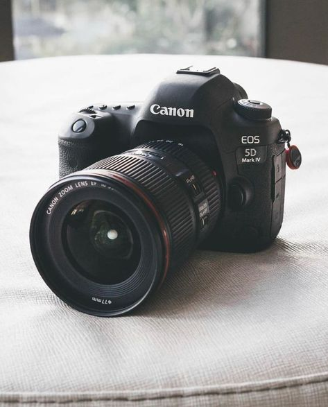

Digital Single-Lens Reflex (DSLR) Cameras
DSLR cameras are renowned for their versatility, high image quality, and advanced features that cater to both amateur and professional photographers. They use a mirror mechanism to reflect light from the lens up to an optical viewfinder, allowing photographers to see exactly what the lens sees.
Features of DSLR Cameras
Some key features of DSLR cameras include:
- Interchangeable lenses for various photography needs
- Large sensors for better image quality and low light performance
- Manual controls for aperture, shutter speed, and ISO settings
- Optical viewfinder for real-time scene composition
- Robust build quality and ergonomic design
Popular DSLR Brands and Models
Some popular brands and models in the DSLR market include:
- Canon EOS series (e.g., Canon EOS 5D Mark IV, Canon EOS 90D)
- Nikon D series (e.g., Nikon D850, Nikon D7500)
- Sony Alpha series (e.g., Sony Alpha a99 II)
DSLR cameras remain a favorite among photographers for their reliability, extensive lens options, and overall performance.